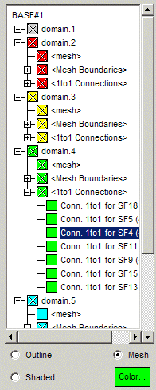
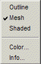
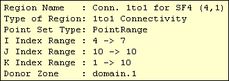

|  | The display tree list is filled in when the CGNS
base is selected. The first entry in the tree will be the name of the
base. Under the base node will be the list of zones for that base. For
each zone, CGNSplot will build a list of regions which consist of the exterior
faces of the zone mesh, surface elements, and connectivities and boundary
conditions which lie on the exterior faces. These nodes will be located
under the zone node.
Nodes with a name enclosed in < > are created by CGNSplot and do not correspond to CGNS entities in the file. For example, a structured zone will have a node <mesh> which refers to the structured mesh, and <Mesh Boundaries> which contains the i,j and k boundary faces of the mesh. An unstructured mesh will contain the node <Element Sections> under which will be located the element sets in the CGNS file. One to one connectivities will be grouped under a <1to1 Connections> node, general connectivities under <General Connections>, and boundary conditions will be under <Boundary Conditions>. To expand and collapse individual nodes in the tree, use the icon to the far left, or double-click the left-mouse button on the node name. You may also expand all the nodes under a given node, by holding the Shift key while clicking on a node name. The Control key with the left mouse button will collapse all the nodes. If a node contains the icon instead of a box, this indicates that CGNSplot was unable to build the region. If you highlight the node, a brief error message will be displayed in the Status Line. |
The current color and visibility state for a region is indicated by the colored box to the left of the node name. A checked box indicates that the visibility is enabled. In order for the region to be visible in the Graphics Window, it's box and all it's parent boxes must be checked. This allows an entire zone by be turned off, for example, by just unchecking the zone visibility box. To turn on the visibility of a node and all of it's children nodes, hold the Shift key while clicking the left mouse button on the node visibility box. Use the Control key will turn off the visibility of the node and all it's children nodes.
The display mode for a region may be one of Outline, Mesh,
or Shaded, as indicated at the bottom of the tree. This shows the
mode for the currently highlighted region. Outline indicates that
the region will be shown by the edges of the region, in addition to any
feature edges in the region (edges where the angle between the shared faces
is greater than 30 degrees). Mesh shows the region with all the
mesh lines and Shaded will display it with shaded faces. The region
color is shown in the Color... button at the bottom. Clicking on
this button, will bring up a color selection panel, which allows you to
change the region color.
|  | You may also right-mouse click on a node, which will invoke the popup menu shown to the left, allowing changing of the mode or color. The Info... selection will show information about the region as described below. |
Note: When you change the mode or color for a node, the changes are propagated to all it's children nodes.
Clicking the middle mouse button on a region name, or selecting Info... from the popup menu will display a window similar to the one below, listing the properties of the region.

| Mouse Binding | On Visibility Button | On Node Name |
| Button 1 (left) | toggles node visibility | highlights node |
| Button 2 (middle) | shows node info window | |
| Button 3 (right) | invokes popup menu | |
| Double-Click-Button 1 | toggles open status of node | |
| Shift-Button 1 | turns on visibility of node and all children | expands (opens) node and all children |
| Control-Button 1 | turns off visibility of node and all children | collapses (closes) node and all children |